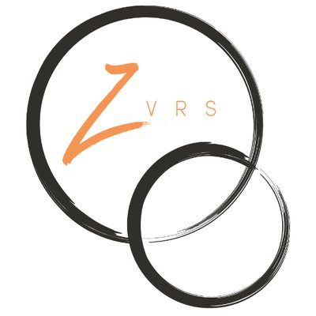

TEAM MEMBERS
My name is James Wang, I was born in Shanghai, China and grown up there for 27 years. I became a deaf due to high fever when I was 3 years old. I was enrolled by National Technical Institution for the Deaf for AAS degree in Applied Computer Technology and graduated in 1998 and enrolled in Rochester Institution of Technology in 1998 for Bachelor degree in Information Technology. I graduated in 2002 and IBM hired me for software engineer position. I worked with IBM for 6 years and I gotlaid off from IBM in 2009. I love to travel and Chinese painting.
Selcuk is a traveller.He grew up in Istanbul and moved to Australia after he graduated from RMIT University in Melbourne. He holds a bachelor degree in Civil Engineering and a Masters degree in Geotechnical Engineering. He worked for Coffey Mining for six years before he decided to learn coding.Selcuk` s first personal computer was Commoder 64. He has developed a better understanding of operating systems and computers after he got familiar with MS-DOS in the 90`s.In his leisure time, he enjoys going to concerts, exploring different genres of music and watching soccer matches. He support his hometown team, Besiktas. His passion is travelling and learning about different cultures.
Back to Homepage